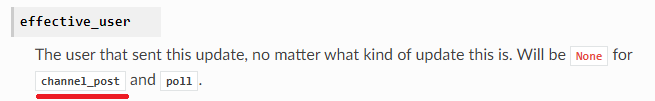
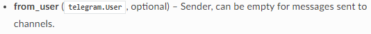
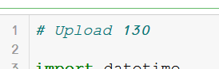

ממה שמצאתי אי אפשר לחבר רובוט לערוץ טלגרם מהקוד אלא חייבים להזמין אותו לערוץ/קבוצה. האם זה בסדר לא להתייחס לחלק הזה בתרגול ופשוט שיהיה צריך לצרף את הבוט ידנית?
בנוסף, האם הכוונה באמת לערוץ או לקבוצה? בערוץ רק אדימינים יכולים לשלוח הודעות ממה שאני יודעת (פחות כיף תחרות טריוויה כשמשחקים לבד) וגם נראה שלהודעות בערוץ אי אפשר לקבל את מי ששלח אותם כדי לבנות לוח נקודות


(דיסקליימר: יש מצב שהבנתי לא נכון משהו מהמציאות שלי למעלה ואם כן אני מתנצלת )
לייק 1
Yam
כן
אפשר למנות את כולם לאדמינים ולשחק ביניכם, ודווקא יש מימוש עובד לערוץ שאחד החניכים הגיש.
בכ"מ גם קבוצה זה אחלה, מה שיותר נוח
2 לייקים
imimouni
אפשר למנות את כולם לאדמינים ולשחק ביניכם, ודווקא יש מימוש עובד לערוץ שאחד החניכים הגיש.
בכ"מ גם קבוצה זה אחלה, מה שיותר נוח
בדיוק הגעתי גם לקטע הזה, אז למנות את כולם לאדמינים או שיש דרך אחרת לאפשר להם לשלוח תשובה לערוץ?
Yam
אם זה ערוץ, למנות כאדמינים
avishaisch
ים, האם יש בעיה במערכת הגשת התרגילים? ניסיתי להעלות את התרגיל וכמובן שבשורה הראשונה יש Upload 130 #, מראה לי שהוא טוען כולל ה-V בסוף אבל למעשה התרגיל לא עלה
לייק 1
devorack
שמרת את המחברת? האם הגרסה זהה לגרסה קודמת? תוסיף # reupload בסוף ותשמור ותנסה שוב
לייק 1
avishaisch
ניסיתי גם את זה אבל אין כאן ענין של “זהה לגירסה הקודמת” - אין גירסה קודמת. זה הניסיון הראשון לטעון את התרגיל - לא קיימת גירסה קודמת
Yam
תוכל בבקשה לצלם את השורה העליונה בתא שאתה מנסה להגיש?
avishaisch

Yam
אוקיי, מתנצל. זו באמת הייתה טעות שלי. הגבלתי בטעות את ההעלאה עד היום ב־19:00 במקום עד מחר ב־19:00.
זה תוקן
avishaisch
הצלחתי עכשיו - עשית משהו?
בכל מקרה - תודה לכולם, עכשיו אגש לתקן את ההערות שקיבלתי
avishaisch
לא קרה כלום, הכל בסדר, העיקר שעכשיו זה אפשרי. מבין שאני הייתי האחרון שמגיש…
תודה רבה.
נ.ב.
התרגיל היה מדהים ומחכים!!!
2 לייקים
rotembej
מצרפת עוד שאלה…
באופן עקרוני… שמתי לב שכשאני מכבה את המחשב (או אפילו רק יוצאת מהג’ופיטר) הבוט שלי לא ממשיך לעבוד… זה קורה בגלל שזה בג’ופיטר או שיש משהו שחסר אצלי בהגדרת הקוד?
ובהחלט התרגיל מגניב מאוד!!
Yam
הבוט רץ מהמחשב שלך. כל עוד כיבית את פייתון, הוא לא יכול להמשיך לרוץ(:
לייק 1
rotembej
זה נכון לכל הבוטים? אז איך בוטים עובדים בצורה אוטומטית? הם על מחשב שפתוח כל הזמן?
aviadamar
על שרתים אני מניח.
(שזה בעצמם מחשבים שדלוקים כל הזמן)
תקנו אותי אם אני טועה
2 לייקים
Yam
כמו שאביעד אומר – יש שירותי אחסון (לרוב בתשלום).
זה (ממש ממש ממש בגדול) מחשב מרוחק שפעיל 24/7
לייק 1
rotembej
הבנתי… תודה על התשובה המהירה!!
assi
תגידו איפה התרגיל הזה על הבוט פורסם? לא ראיתי אותו לא במחברות, ולא באתר.

 )
)